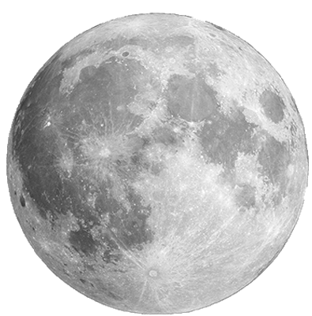
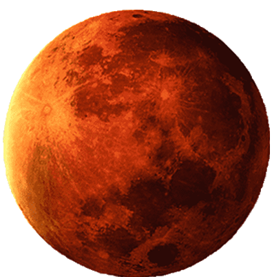

O pequeno planeta que estava ao longe era na verdade uma lua de outro planeta. Logo que o Pequeno Príncipe chegou, ele ficou deslumbrado com o grande planeta na qual esta lua orbitava. Era a Terra...
1• Ir para a Terra 2• Espere vamos ver o que a Lua tem de interessante
Há sinais de que alguém esteve por aqui.
Ví pegadas, objetos e
uma bandeira enfincada.
Mas ainda não achei ninguém.


Voltar